Creating an accessible, informative experience for first-time keyboard builders.
- Timeline
- Fall 2022, 9 weeks
- Team
- Solo class project
- Skills
- User research, web design, usability testing, Figma

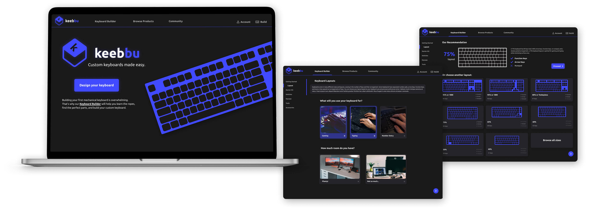
The Problem
Mechanical keyboard building is a popular and growing hobby, but novices are intimidated and overwhelmed by the complexity of the process. With a vast wealth of conflicting information, hundreds of online sellers, and the many decisions a user must make to customize their keyboard, beginners are deterred by confusion and uncertainty.
How might we guide beginners through building their first mechanical keyboard?
The Solution
By embedding information within the part-picking process, helping users decide what they want from their keyboard.
Aggregate sellers into one browsing platform.

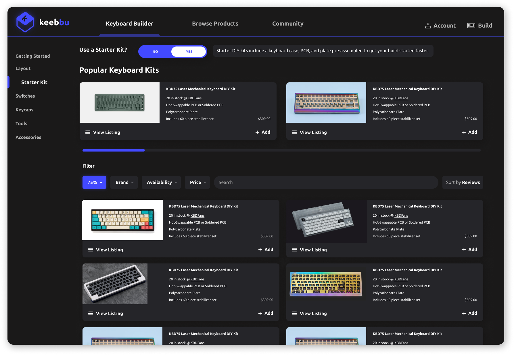

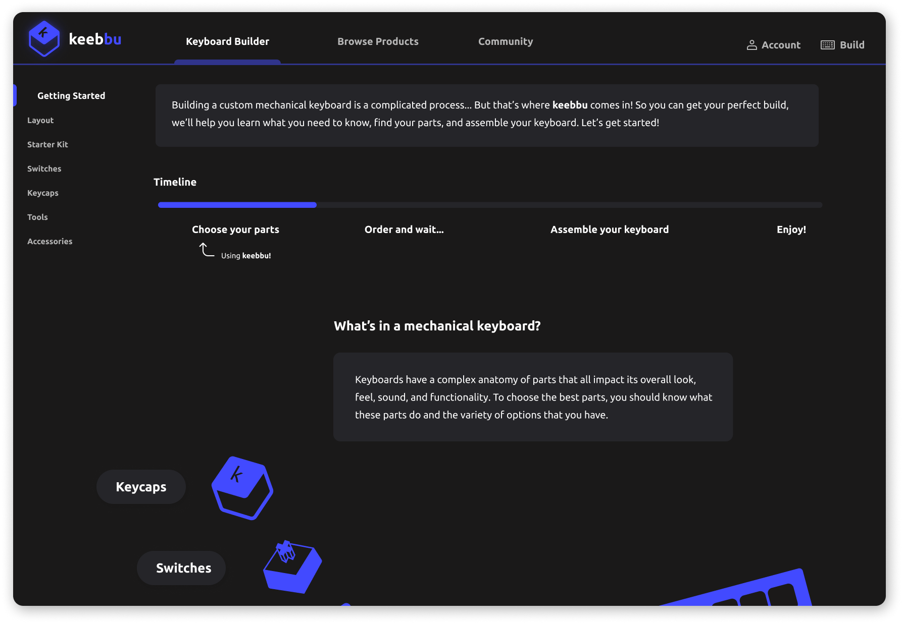
Educate users with relevant information as they go.
Make personalized recommendations to ease decision-making.

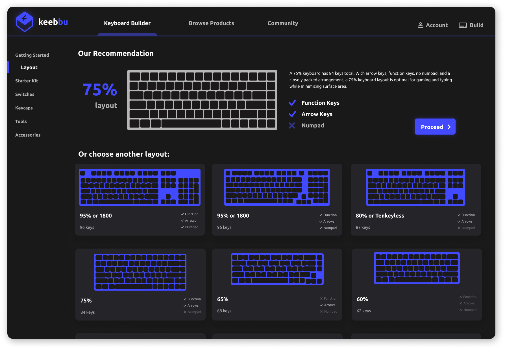
01User research
I began investigating the problem space by diving into the world of keyboard building as a newbie myself. I researched online as if I was about to build my own keyboard, searching for guides, trusted sellers, and explanations of all the different parts. Although I learned a lot of new jargon and got an idea of the steps involved, I was still unsure if my knowledge was complete enough to build a keyboard successfully. Based on my own experience, as I moved into user interviews I was particularly interested to see if other keyboard enthusiasts ever felt the same way.
I interviewed 3 keyboard hobbyists about their experience getting into the hobby, what they'd learned, and struggles they faced during the process.

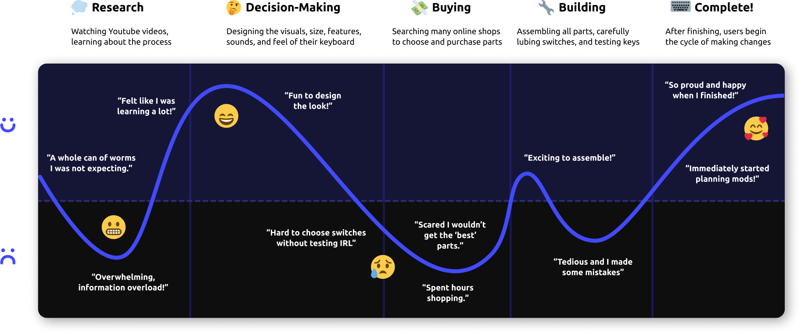
Pain point: shopping
Building a single keyboard requires purchasing parts from many different sites, and comparing prices across even more.
How might we streamline the process of researching & buying parts?
Pain point: decision-making
Users stressed over their choices at the final buying step, concerned they wouldn't make the "right" decision.
How might we offer validation & reassurance for users' choices?
02Ideation
Solution conceptAn online service that consolidates browsing and shopping for mechanical keyboard parts.

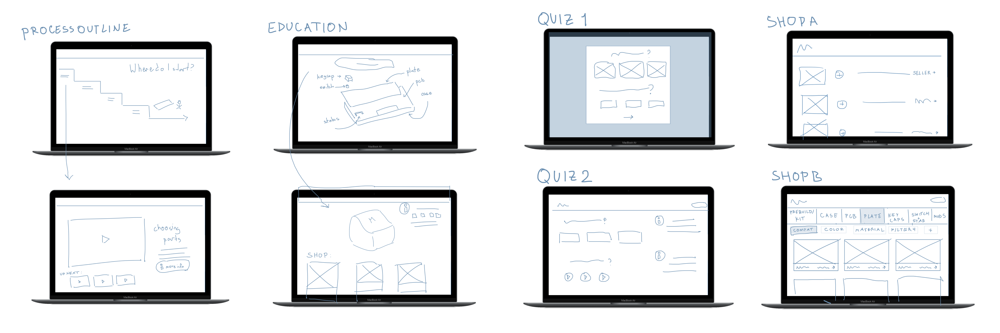
03User research pt. 2
As I began designing, however, I realized my user research had a crucial flaw.
I had only talked to people who successfully built a mechanical keyboard, leaving out those who gave up.
To identify barriers to entry for new users, I needed to include both groups. So, midway through the project, I went back and interviewed two new individuals who had tried but abandoned the process. They showed me two critical points where these "lost opportunity" users gave up.

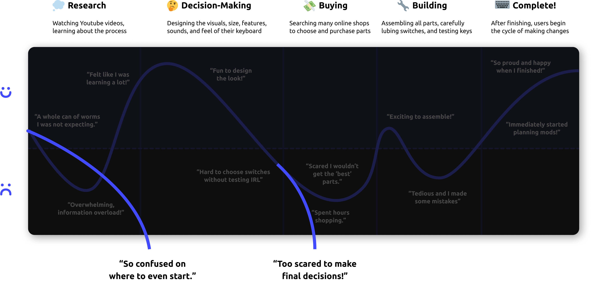
Pain point: research
New users were scared away by confusion and uncertainty, and if they were not put off by the initial deluge of information, their uncertainty deterred them at the decision-making phase, making them too scared to commit to the costs of buying their parts.
How might we reduce information overload in the learning process?
04Concept refinement
This second round of interviews revealed a new opportunity area in educating unfamiliar users inside the buying process.
To assess the uniqueness of the idea and understand the current market, I investigated existing tools for mechanical keyboard building and part shopping.

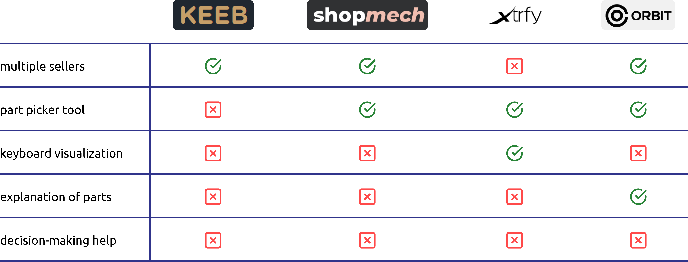
While these existing products had some of my key features, I found that very few had any sort of education on mechanical keyboards, and acted solely as a storefront for products. Computer Orbit had a one-line explanation of each keyboard part built into their part-picking tool, but still lacked detail and had no content to help users make decisions on what parts or features they might want. This white space in the market helped me define my product's key offering:
Unique value propositionOffer education within the buying process and help beginners decide what they need from their keyboard.
05Wireframe & directional testing
With this guiding directive, I created 5 diverse low-fidelity flows of the part selection process and brought them to my users for feedback.

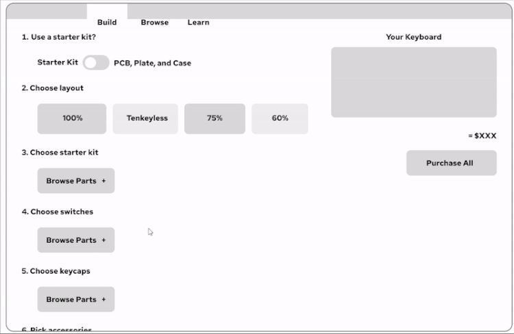
Build Version A
✅ What worked: Concise and clear summary of the experience
❎ What didn't: Too confined and directed
Some co-design: one user pointed out this interface would work well as a "cart" at the end, so I repurposed it in my final design!

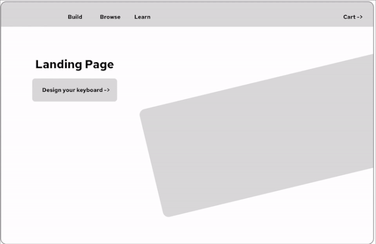
Build Version B
✅ What worked: UI patterns match online storefronts and users' existing schemas
❎ What didn't: Not enough teaching, which fails the unique value proposition!

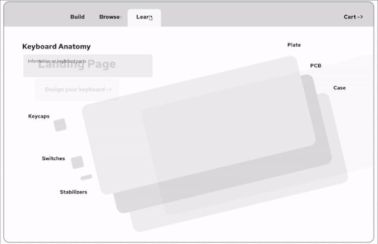
Education Version A
✅ What worked: Fun, interactive, and visual!
❎ What didn't: Not the key information. Users ask "So what?"

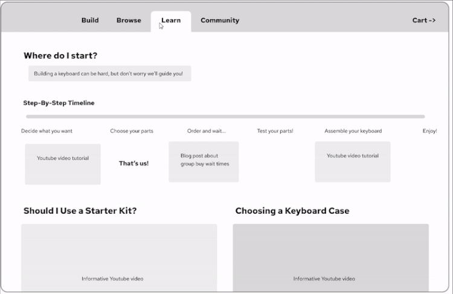
Education Version B
✅ What worked: Tells users exactly what to do next
❎ What didn't: Embedded video learning is too distracting and time-consuming
06Iteration
I combined what worked from each prototype and moved into developing a single concept, cycling through iterating and gathering feedback, elevating the visual and interactive fidelity each time.
Key insight!
For a while, the design centered around all the customization questions appearing in a single quiz-like feed. However, testing revealed that it felt more intuitive, informative, and friendly to split these questions up, asking only when it is most relevant in the process.

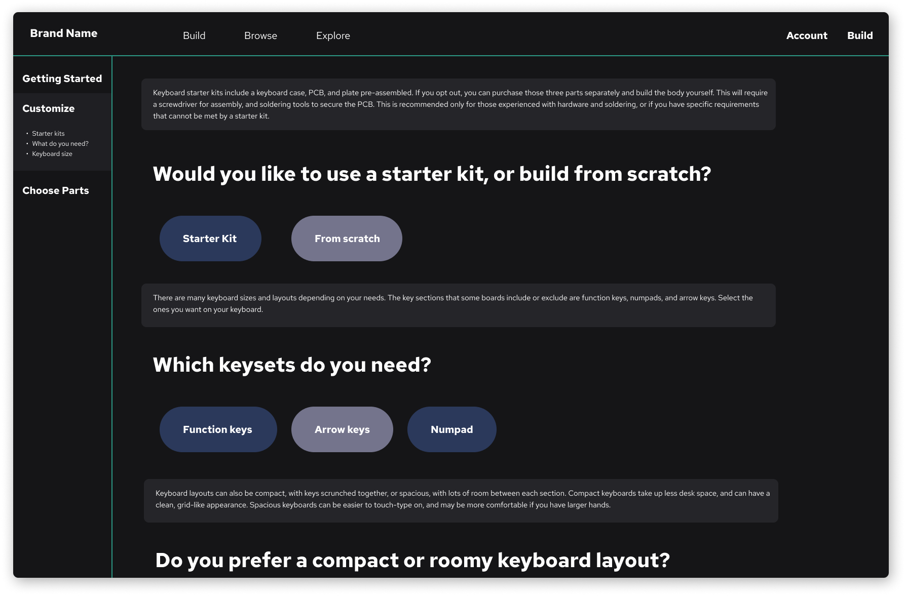
Brand tone
As I iterated, the visual language of the branding took shape, and I aimed for a tech-savvy look, tactile like keyboards themselves, with welcoming language for beginners.

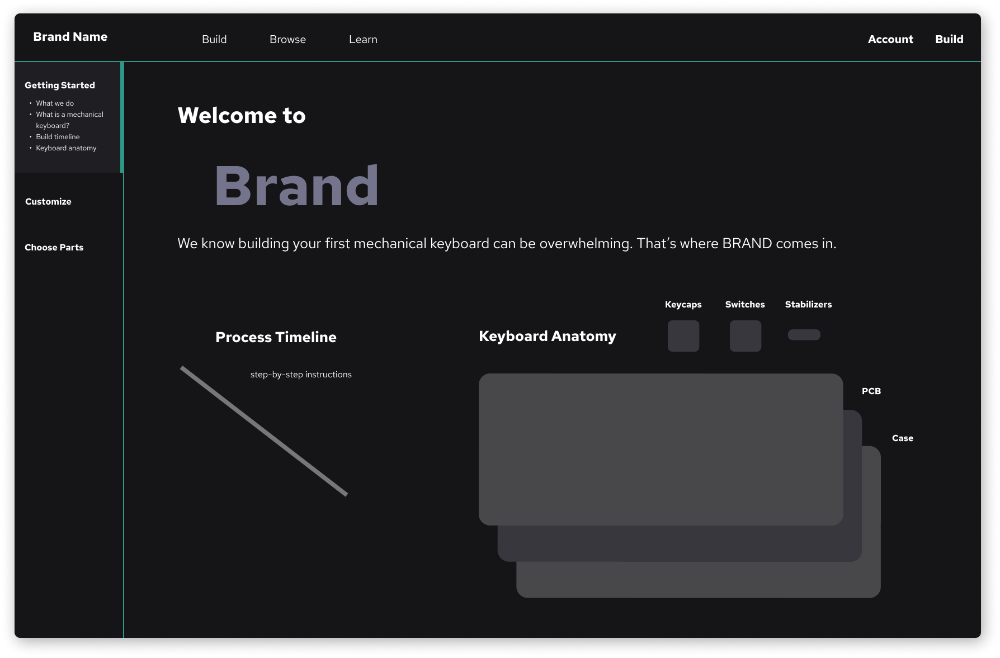
07Style guide

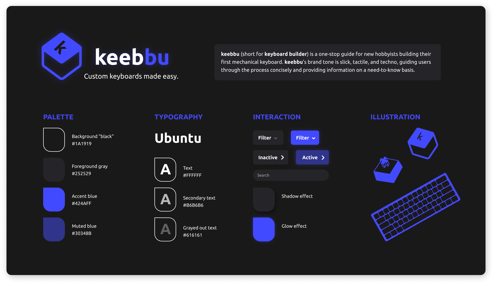
08Final design

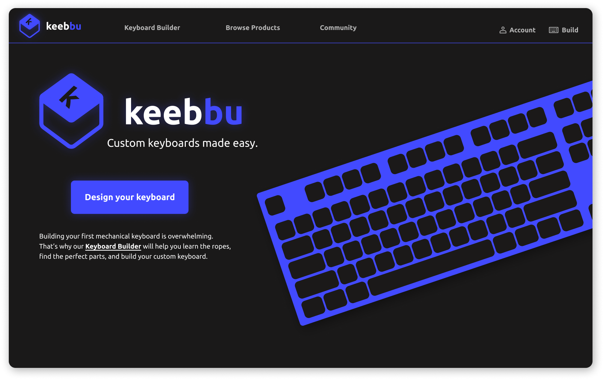
Embedded information educates users with the most relevant facts as they go.


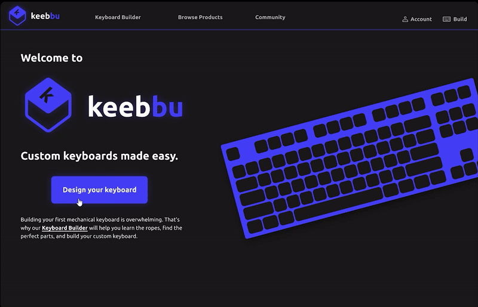
Personalized recommendations help users confidently make decisions.
Compatibility checker validates user choices and removes doubt.

09Learnings ✨
Save time for hi-fi testing!
I conducted really thorough directional testing with my low- and mid-fidelity prototypes in the early and middle phases of this project, and learned a ton that helped define the direction of my product. However, as I set about developing the branding, UI details, and high-fidelity prototype, I only brought snippets and pieces to my users for feedback. By the time I had a complete and interactive flow ready, I had too little time for extensive user testing.
February 2023 update: Following the end of this class, I was able to do some usability tests and recognized some key areas for refinement, like improving the color contrast in the dark UI, and having a system to catch user errors earlier on in the process. I wish I had the forethought and planning to include this within the project's original timeline, so that these simple fixes could be a part of the final product!
Don't fixate!
While I identified aggregating sellers as a useful opportunity, I think I settled a little too quickly into my concept of an online storefront. It prevented me from seeing the really useful part of what I was making (the guidance and education) and made me over-focus on the details of the part-browsing UI. In the future, I want to keep my early ideation more broad, not settling on a single platform, problem, or feature until I've explored a wider range of options.